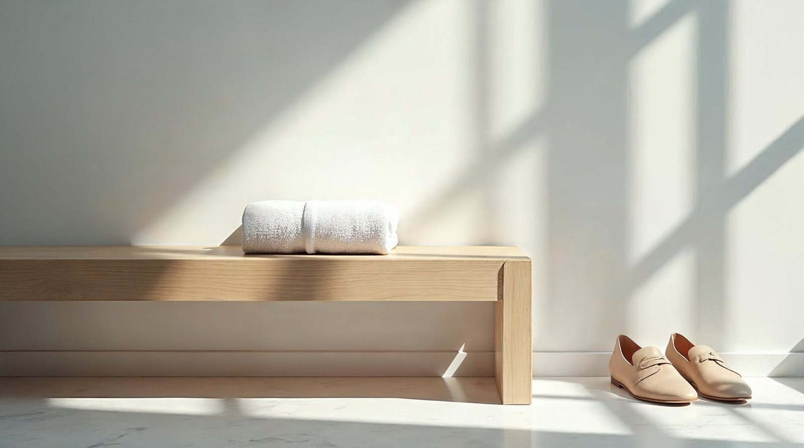
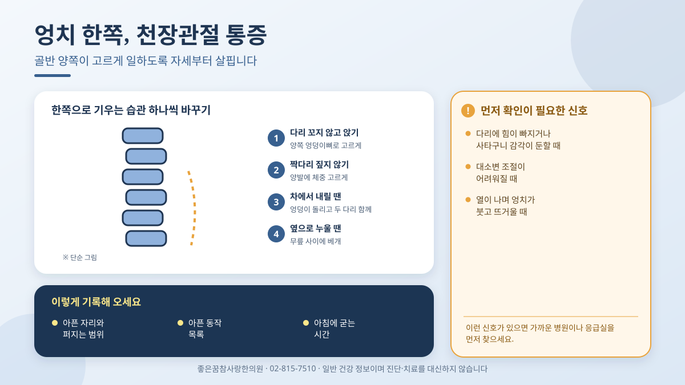

이종호 한의사 감수좋은꿈참사랑한의원 대표원장 (한의사 면허번호 19769)발행 2026-11-26 · 수정 2026-11-26
이 글의 차례
차에서 내리려고 한쪽 다리를 먼저 내딛는 순간, 허리띠 바로 아래 엉덩이 위쪽이 콕 찌르듯 아픕니다. 손으로 그 자리를 짚어 보면 엉치뼈 옆 움푹한 곳입니다. 계단을 오를 때도, 침대에서 돌아누울 때도 같은 자리가 걸립니다.
진료실에서 "허리가 아파요" 하시며 손으로 짚는 자리를 보면, 생각보다 많은 분이 허리보다 조금 아래 엉덩이 위쪽을 가리키십니다. 흔히 엉치가 아프다고 표현하시는 이 자리에는 천장관절이라는 관절이 있습니다.
천장관절은 척추 맨 아래의 엉치뼈와 양쪽 골반뼈가 만나는 관절입니다. 크게 움직이는 관절은 아니지만, 상체의 무게를 두 다리로 나누어 보내는 중요한 길목에 있습니다. 이 관절과 주변 인대가 불편해지면 엉덩이 위쪽 한 곳이 콕 찌르듯 아프고, 때로는 엉덩이와 허벅지 뒤쪽까지 묵직함이 퍼집니다.
오늘은 엉치 통증이 왜 생기는지, 허리 디스크나 다른 통증과는 어떻게 구분해 보는지, 생활에서 무엇을 조심하면 좋은지, 그리고 한의원에서는 무엇을 함께 살피는지 차근차근 말씀드려 보겠습니다.
천장관절은 어떤 관절인가요?
등 뒤에서 허리띠를 맨 자리 바로 아래를 보면, 양쪽에 작게 움푹 들어간 보조개 같은 자리가 있습니다. 그 아래쪽에 천장관절이 있습니다. 엉치뼈를 가운데에 두고 양쪽 골반뼈가 맞물린 모양이라 좌우에 하나씩, 모두 두 개입니다.
이 관절은 아주 조금만 움직입니다. 걸을 때 한쪽 다리가 앞으로 나가면 골반이 살짝 비틀리는데, 그 비틀림을 부드럽게 받아 주는 것이 천장관절의 일입니다. 관절 주변은 굵고 질긴 인대로 단단하게 묶여 있어서, 평소에는 흔들림 없이 상체의 무게를 다리로 전해 줍니다.
그런데 이 관절이 한쪽으로 너무 많이 움직이거나 반대로 지나치게 굳으면, 관절 자체와 주변 인대가 예민해지면서 아픔이 생깁니다. 아픔은 대개 한쪽에 생기고, 엉치뼈 옆에서 시작해 엉덩이, 사타구니, 허벅지 뒤쪽까지 퍼지기도 합니다.
왜 엉치 한쪽이 아파질까요
천장관절 통증은 한 번의 충격으로 시작되기도 하고, 오래 쌓인 습관에서 시작되기도 합니다. 진료실에서 이야기를 나누다 보면 아래와 같은 계기가 자주 나옵니다.
- 계단에서 헛디디거나 엉덩방아를 찧은 뒤
- 한쪽 다리에만 체중을 싣고 서는 습관이 오래된 경우
- 다리를 꼬고 앉거나 한쪽 엉덩이로 기대어 앉는 시간이 긴 경우
- 임신 중이거나 출산 뒤 몇 달 동안 골반 주변이 느슨해진 경우
- 골프, 달리기처럼 골반을 한 방향으로 비트는 운동을 많이 하는 경우
- 다리 길이 차이나 발목 문제로 걸음이 한쪽으로 기우는 경우
임신과 출산은 특히 중요한 계기입니다. 아기가 나올 길을 열기 위해 몸은 골반의 인대를 느슨하게 만드는데, 이 변화가 천장관절을 흔들리기 쉽게 만듭니다. 출산 뒤 아기를 한쪽 골반에 걸쳐 안는 자세가 이어지면 아픔이 더 오래갈 수 있습니다.
한의학에서는 허리와 골반을 받쳐 주는 힘이 약해지고, 한쪽으로 기울어진 쓰임 때문에 기혈의 흐름이 한 자리에 머무는 모습으로 봅니다. 찬 바닥에 오래 앉거나 몸이 차가워지면 엉치가 더 묵직해진다는 분도 많아서, 몸의 온도와 회복력을 함께 살핍니다.
허리 디스크와는 어떻게 다른가요?
엉치가 아프고 다리까지 묵직하면 허리 디스크를 먼저 걱정하시는 분이 많습니다. 두 가지가 함께 있는 경우도 있지만, 살펴보는 방향이 다르기 때문에 처음에 구분해 보는 것이 중요합니다.
- 아픈 자리: 천장관절 통증은 허리띠 아래 엉치뼈 옆 한 점을 손가락으로 짚을 수 있는 경우가 많습니다. 디스크는 허리 한가운데와 다리 쪽으로 넓게 아픈 경우가 많습니다.
- 다리로 퍼지는 모양: 천장관절은 대개 무릎 위 허벅지까지 묵직함이 퍼집니다. 디스크는 무릎 아래 종아리와 발끝까지 전기가 오듯 저린 경우가 많습니다.
- 아픈 동작: 천장관절은 한쪽 다리로 서기, 돌아눕기, 차에서 내리기처럼 골반이 비틀리는 동작에서 아픕니다. 디스크는 오래 앉아 있거나 허리를 숙일 때 더 심해지는 경우가 많습니다.
- 감각과 힘: 디스크는 발가락 힘이 빠지거나 감각이 둔해지는 경우가 있습니다. 천장관절 통증만으로는 이런 변화가 드뭅니다.
엉덩이 깊은 곳의 근육이 좌골신경을 눌러 생기는 이상근 증후군, 고관절 자체의 문제도 비슷한 자리에 아픔을 만들 수 있습니다. 젊은 나이에 아침마다 허리와 엉치가 한 시간 넘게 굳고 움직이면 풀린다면, 강직성 척추염처럼 염증성 질환도 함께 살펴야 합니다.
그래서 진찰 때는 한 가지 검사만으로 판단하지 않고, 아픈 자리와 퍼지는 모양, 아픈 동작을 여러 개 겹쳐서 봅니다. 필요하면 정형외과나 류마티스내과 검사를 함께 권해 드립니다.
집에서 스스로 살펴보는 방법
먼저 거울 앞에 서서 허리띠 아래 양쪽 보조개 자리를 찾아보세요. 아픈 쪽 보조개 바로 아래를 손가락으로 가볍게 눌러 평소의 아픔이 그대로 나는지 확인합니다.
다음으로 벽을 짚고 한쪽 다리로 10초쯤 서 보세요. 양쪽을 번갈아 해 보며 어느 쪽에서 엉치가 찌르는지 봅니다. 누워서 한쪽 무릎을 세운 뒤 그 무릎을 반대쪽으로 천천히 넘길 때 엉치가 당기는지도 확인해 보시면 좋습니다.
이런 점검은 정확한 진단을 대신하지는 않지만, 진료실에서 어느 동작이 불편한지 설명하실 때 큰 도움이 됩니다. 아픔을 참고 끝까지 하지는 마시고, 불편이 느껴지는 지점에서 멈춰 주세요.
먼저 이렇게 여쭙니다
처음 오시면 저는 대략 이런 순서로 여쭙니다. 미리 생각해 오시면 이야기가 훨씬 수월해집니다.
- 가장 아픈 자리는 어디인가요? 손가락 하나로 짚어 주세요.
- 아픔이 엉덩이, 사타구니, 허벅지, 종아리 중 어디까지 퍼지나요?
- 돌아눕기, 차에서 내리기, 계단 오르기, 오래 앉기 중 무엇이 가장 힘든가요?
- 아프기 시작하기 전에 넘어지거나 무리한 일이 있었나요?
- 임신, 출산, 다리를 다친 일이 있었나요?
- 다리가 저리거나 힘이 빠지는 느낌이 있나요?
- 아침에 허리와 엉치가 굳는 시간은 얼마나 가나요?
어떤 자세로 앉고 서는지, 잘 때 어느 쪽으로 누우시는지도 여쭙습니다. 하루에 가장 오래 하는 자세 하나를 바꾸는 것이 생활 관리의 출발점이 되는 경우가 많습니다.
일상에서 먼저 해 볼 수 있는 것
천장관절은 골반이 한쪽으로 비틀리거나 기울 때 예민해집니다. 그래서 양쪽에 고르게 체중을 싣는 습관이 가장 중요한 첫걸음입니다.
- 서 있을 때 양발에 체중을 고르게 싣고, 한쪽 다리로 짝다리 짚지 않기
- 앉을 때 다리를 꼬지 말고 양쪽 엉덩이뼈로 고르게 앉기
- 차에서 내릴 때는 엉덩이를 먼저 돌린 뒤 두 다리를 함께 내리기
- 침대에서 돌아누울 때는 무릎을 붙인 채 몸 전체를 한 덩어리로 돌리기
- 옆으로 누울 때는 무릎 사이에 베개를 끼워 골반이 비틀리지 않게 하기
- 계단은 아프지 않은 다리로 먼저 오르고, 내려갈 때는 아픈 다리를 먼저 딛기
아기를 안을 때 한쪽 골반에 걸쳐 안는 습관이 있다면 가슴 앞으로 안거나 양쪽을 번갈아 안아 주세요. 무거운 가방은 한쪽으로만 메지 말고 양쪽으로 메는 배낭을 권해 드립니다.
엉덩이 근육을 부드럽게 풀어 주는 것도 도움이 됩니다. 누워서 양 무릎을 세우고 엉덩이를 천천히 들어 올렸다 내리기, 옆으로 누워 무릎을 붙인 채 위쪽 무릎만 살짝 벌렸다 모으기를 아프지 않은 범위에서 10번씩 해 보세요.

생활 속에서 놓치기 쉬운 자세
지갑을 바지 뒷주머니에 넣고 오래 앉아 계시면 한쪽 엉덩이만 높아져 골반이 기울어진 채로 앉게 됩니다. 운전이나 사무 일을 오래 하신다면 지갑은 앞주머니나 가방으로 옮겨 보세요.
소파에 비스듬히 기대어 한쪽 팔걸이에 몸을 기울이는 자세도 천장관절에 부담을 줍니다. 텔레비전을 볼 때 늘 같은 쪽으로 기대어 계신다면, 의자 위치를 바꾸거나 등받이에 쿠션을 대어 몸을 곧게 세워 보세요.
신발도 한 번 살펴보세요. 굽 한쪽만 유난히 닳아 있다면 걸음이 한쪽으로 기울어 있다는 신호일 수 있습니다. 진료 때 자주 신는 신발을 신고 오시면 걸음과 함께 살펴보겠습니다.
찬 바닥이나 차가운 돌계단에 오래 앉는 것도 피해 주세요. 엉치가 차가워지면 주변 근육이 더 굳어 묵직함이 커진다는 분이 많습니다.
출산 뒤 엉치가 오래 아프다면
출산 뒤 몇 달 동안은 골반의 인대가 아직 원래의 단단함을 되찾아 가는 중입니다. 이 시기에 아기를 안고, 수유하고, 바닥에 앉았다 일어나는 일이 하루에도 수십 번 반복되면 천장관절이 쉴 틈이 없습니다.
수유할 때는 등받이에 등을 기대고 수유 쿠션으로 아기를 받쳐 팔과 골반의 부담을 덜어 주세요. 바닥에 앉을 때는 양반다리나 옆으로 다리를 모은 자세보다 낮은 의자에 앉는 편이 골반이 덜 비틀립니다.
출산 뒤 엉치 통증은 몸이 회복되는 흐름과 함께 살피는 것이 좋습니다. 잠이 부족하고 몸이 찬 시기라 진료실에서는 엉치와 함께 잠, 땀, 손발의 온도도 여쭙습니다. 수유 중이시라면 진료 전에 꼭 알려 주세요.
한의원에서 함께 살필 수 있는 경우
- 엉치뼈 옆 한 점이 몇 주 넘게 찌르듯 아픈 경우
- 돌아눕거나 차에서 내릴 때마다 엉치가 걸리는 경우
- 임신 중이거나 출산 뒤 엉치와 골반이 불편한 경우
- 엉덩이와 허벅지 뒤쪽까지 묵직함이 퍼지는 경우
- 오래 앉아 일하거나 운전한 날 엉치가 더 아픈 경우
좋은꿈참사랑한의원에 오시면 먼저 다리 저림과 힘 빠짐처럼 다른 원인을 의심할 신호가 없는지부터 봅니다. 그다음 맥을 짚고, 엉치뼈 주변과 엉덩이 근육을 직접 눌러 보며 아픈 자리와 골반의 기울기, 다리 길이와 걸음을 함께 확인합니다.
진찰한 내용을 바탕으로 침, 약침, 추나, 온열 관리 가운데 지금 상태에 맞는 것을 고르고, 집에서 할 자세 관리와 움직임 연습을 함께 정합니다. 몸이 차고 회복이 더디다고 느끼신다면 한약 상담을 드리기도 하는데, 드시는 약을 먼저 확인하고 신중하게 정합니다.
임신 중이시거나 임신 가능성이 있다면 진료 전에 먼저 알려 주세요. 치료 자리와 방법, 자세를 고를 때 꼭 반영하고, 필요하면 산부인과와 상의하시도록 안내합니다. 정형외과에서 받고 계신 진료나 약이 있다면 그대로 이어 가시면 됩니다.
이렇게 기록해 오시면 상담이 쉬워집니다
- 가장 아픈 자리와 아픔이 퍼지는 범위(몸 그림에 표시해도 좋습니다)
- 아픈 동작 목록(돌아눕기, 차에서 내리기, 계단, 오래 앉기 등)
- 하루 중 가장 아픈 시각과 그때 하던 일
- 아침에 굳는 시간이 얼마나 가는지
- 받으신 검사 결과지와 해 본 치료, 운동
일주일 정도만 적어 오셔도 충분합니다. 아픔이 심했던 날과 그날 앉고 서고 누웠던 자세를 나란히 놓고 보면, 생활에서 바꿀 지점이 훨씬 또렷해집니다.
골반이 고르게 일하도록
엉치 통증은 골반의 한쪽이 오랫동안 더 많은 일을 떠맡아 온 결과인 경우가 많습니다. 그래서 아픈 자리를 돌보는 것과 함께, 양쪽이 고르게 일하도록 하루의 습관을 조금씩 바꿔 주는 것이 중요합니다.
아픔이 가라앉는 데에는 시간이 걸릴 수 있지만, 돌아누울 때 덜 망설여지는 것, 차에서 내릴 때 한 번에 일어서는 것처럼 작은 변화부터 찾아오는 경우가 많습니다. 그런 변화를 알아차리는 것이 꾸준히 이어 가는 힘이 됩니다.
이번 주에는 앉을 때 다리를 꼬지 않는 습관 하나만 골라 보세요. 다음에 오시면 돌아눕기와 차에서 내리기가 어떻게 변했는지 함께 확인해 보겠습니다.
이런 증상은 먼저 확인이 필요합니다
- 다리에 힘이 빠지거나 사타구니 주변 감각이 둔해지고 대소변 조절이 어려워지는 경우
- 열이 나면서 엉치가 붓고 뜨겁거나 밤에도 쉬지 않고 아픈 경우
이런 신호가 있으면 한의원보다 가까운 병원이나 응급실을 먼저 찾으세요.
함께 읽으면 좋은 글
- 임신 중 허리와 골반, 치골이 아플 때는 무엇을 살피고 생활은 어떻게 하나요?
- 아침마다 허리가 굳고 움직이면 풀리는 강직성 척추염은 어떻게 살피나요?
- 허리를 삐끗해 움직이기 힘든 급성 요추 염좌는 첫 며칠 어떻게 살피나요?
- 오래 앉아 공부하거나 일할 때 허리와 골반은 얼마 간격으로 쉬어 주나요?
- 아이를 안고 언덕길을 자주 오르내리는 부모의 허리와 골반이 불편할 때는 어떻게 살피나요?

여쭙는 것
- 가장 아픈 자리는 어디인가요? 손가락 하나로 짚어 주세요.
- 아픔이 엉덩이, 사타구니, 허벅지, 종아리 중 어디까지 퍼지나요?
- 돌아눕기, 차에서 내리기, 계단 오르기, 오래 앉기 중 무엇이 가장 힘든가요?
생활에서 해 볼 것
- 서 있을 때 양발에 체중을 고르게 싣고, 한쪽 다리로 짝다리 짚지 않기
- 앉을 때 다리를 꼬지 말고 양쪽 엉덩이뼈로 고르게 앉기
- 차에서 내릴 때는 엉덩이를 먼저 돌린 뒤 두 다리를 함께 내리기
한의원에서 함께 살필 것
- 엉치뼈 옆 한 점이 몇 주 넘게 찌르듯 아픈 경우
- 돌아눕거나 차에서 내릴 때마다 엉치가 걸리는 경우
- 임신 중이거나 출산 뒤 엉치와 골반이 불편한 경우
먼저 확인이 필요한 신호
- 다리에 힘이 빠지거나 사타구니 주변 감각이 둔해지고 대소변 조절이 어려워지는 경우
- 열이 나면서 엉치가 붓고 뜨겁거나 밤에도 쉬지 않고 아픈 경우
한눈에 보는 표
| 구분 | 핵심 |
|---|---|
| 여쭙는 것 | 가장 아픈 자리는 어디인가요? 손가락 하나로 짚어 주세요. 아픔이 엉덩이, 사타구니, 허벅지, 종아리 중 어디까지 퍼지나요? |
| 생활에서 해 볼 것 | 서 있을 때 양발에 체중을 고르게 싣고, 한쪽 다리로 짝다리 짚지 않기 앉을 때 다리를 꼬지 말고 양쪽 엉덩이뼈로 고르게 앉기 |
| 한의원에서 함께 살필 것 | 엉치뼈 옆 한 점이 몇 주 넘게 찌르듯 아픈 경우 돌아눕거나 차에서 내릴 때마다 엉치가 걸리는 경우 |
| 먼저 확인이 필요한 신호 | 다리에 힘이 빠지거나 사타구니 주변 감각이 둔해지고 대소변 조절이 어려워지는 경우 열이 나면서 엉치가 붓고 뜨겁거나 밤에도 쉬지 않고 아픈 경우 |
자주 묻는 질문
엉치가 아픈 것도 허리 디스크인가요?
그럴 수도 있고 아닐 수도 있습니다. 엉치뼈 옆 한 점이 아프고 무릎 아래까지 저리지 않는다면 천장관절 통증을 먼저 생각합니다. 두 가지가 함께 있기도 해서 진찰로 구분합니다.
골반이 틀어졌다는 말을 들었는데 같은 건가요?
골반의 기울기나 비틀림이 천장관절 통증과 함께 보이는 경우가 많습니다. 다만 겉으로 보이는 기울기만으로 판단하지 않고, 아픈 자리와 동작을 함께 확인합니다.
골반 벨트를 차면 도움이 되나요?
임신 중이나 출산 뒤처럼 골반이 느슨한 시기에는 골반을 가볍게 잡아 주는 벨트가 편하게 느껴지는 분이 많습니다. 너무 조이지 않게, 필요한 시간에만 차시길 권합니다.
임신 중인데 엉치가 아프면 침 치료를 받을 수 있나요?
진료 전에 임신 사실과 주수를 먼저 알려 주세요. 치료 자리와 방법을 신중하게 고르고, 필요하면 산부인과와 상의하시도록 안내합니다.
추나 치료는 꼭 받아야 하나요?
진찰한 뒤 골반의 상태와 아픈 정도를 보고 필요한 경우에 권해 드립니다. 침이나 운동 관리만으로 진행하는 경우도 있습니다.
좋은꿈참사랑한의원은 재진 때 지난번 이야기부터 이어서 여쭙니다. 진료시간과 예약은 오시는 길에서 확인하세요.
어디서 상담받을 수 있나요?
좋은꿈참사랑한의원은 서울 동작구 만양로2길 2 신성빌딩 3층·5층(서울 동작구 상도동, 7호선 상도역 3번 출구 근처)에 있습니다. 한의사 3명(이종호 대표원장, 조영기 수석진료원장, 정원영 진료원장)이 진료합니다. 진료시간은 평일 09:30~20:00(점심 13:00~14:00), 토·일·공휴일 09:30~15:00이며, 방문 전 전화로 확인을 권합니다. 예약은 네이버 예약, 카카오톡 상담, 전화 02-815-7510로 받습니다.
이 글은 일반적인 건강 정보이며 개인의 진단이나 치료를 대신하지 않습니다. 증상이 있거나 복용 중인 약이 있다면 진료를 통해 확인하세요. 치료 효과는 개인마다 다를 수 있습니다.
작성 기준: 일반적으로 알려져 있는 건강 정보를 참고해 정리했습니다(대표원장 감수). 증상 기록은 1~2주 동안 하루 1회, 비슷한 시간에 적어 오시면 지난 상태와 비교하기 쉽습니다.